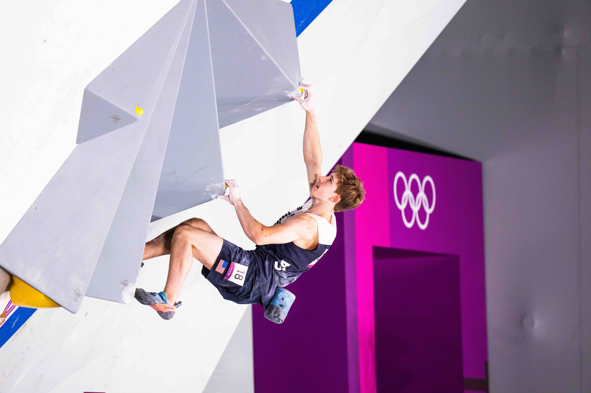
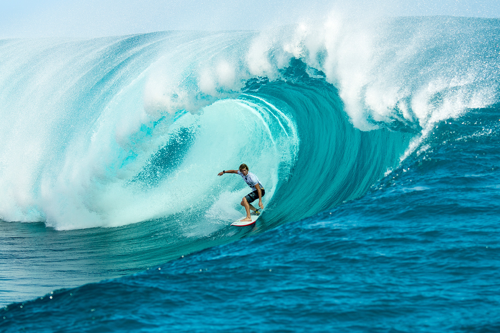
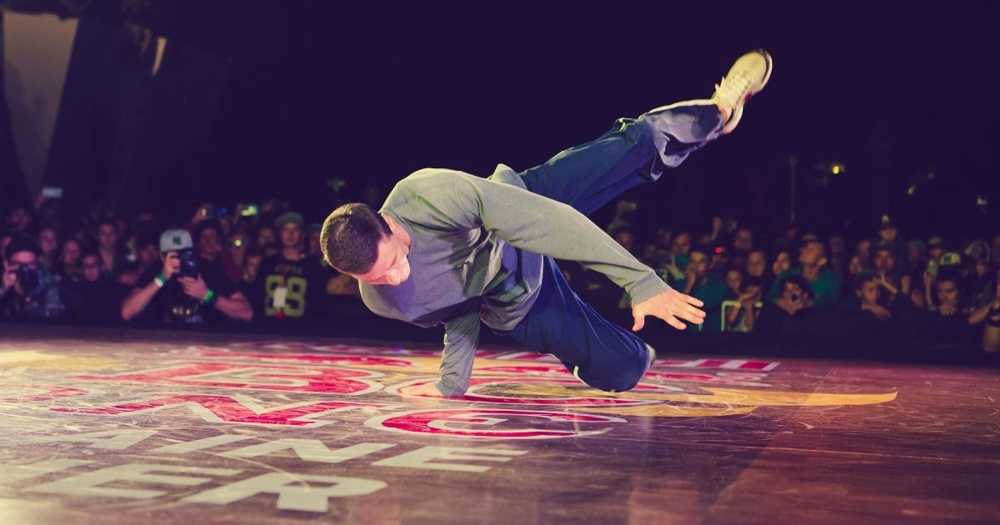
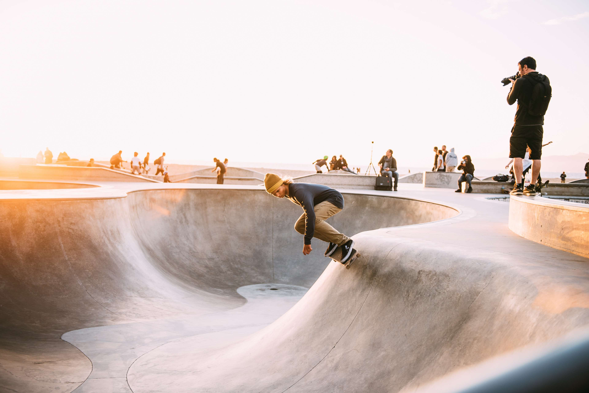
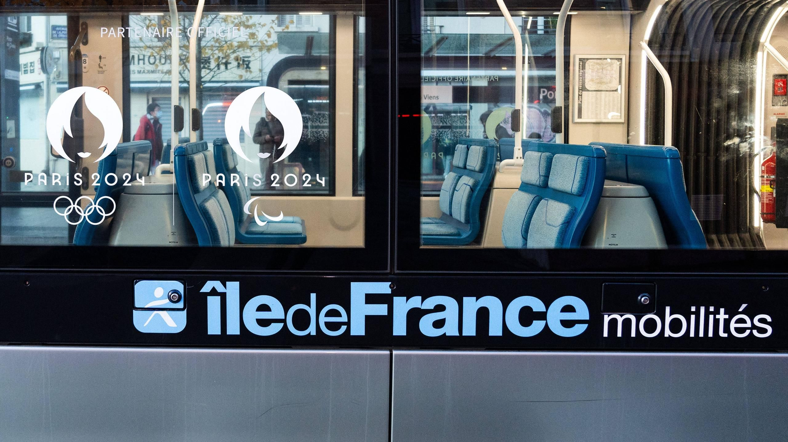
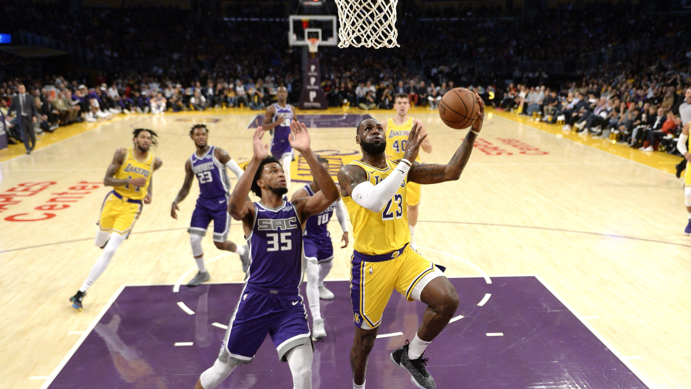

Trials.&.Transports
New Olympic Sports for Paris 2024: A Breath of Modernity
In an effort to make the Paris 2024 Olympic Games more accessible, diverse, and captivating for new generations, France has integrated modern and popular sports disciplines. In addition to retaining climbing, surfing, and skateboarding, which were already present in previous Games, a new entrant is making its debut: breaking. These sports, known for their dynamism and growing popularity, will bring a new energy to the Games, attracting a younger audience in tune with current trends. With a focus on including young athletes, Paris 2024 promises to be an innovative edition that blends tradition with modernity.
Climbing: The Spectacular Ascent at the Bourget Sports Complex

Climbing, a sport that demands physical strength, mental concentration, and precision, has rapidly gained popularity in recent years. The Olympic Committee has thus decided to maintain this discipline in the Paris 2024 Games. The Bourget Sports Complex, specially equipped for the event, will host the climbing events. This modern infrastructure will feature six climbing walls of 15 meters high, divided into three walls for training and three for competitions. This facility will allow athletes to perform under optimal conditions while spectators can follow the climbers’ feats in an exciting atmosphere.
Climbing at the Olympics promises thrilling events where strategy and strength combine with careful stress management to reach new heights. The walls, like the athletes, represent a challenge to overcome, making each competition unique and memorable.
Access to the Site:
Bus provide easy access to the site, facilitating public attendance and ensuring optimal crowds during competitions:
• 133
• 144
• 146
• 157
• 602
• 609
• 610
• 703
Surfing at Teahupoo: The Adrenaline of Waves in Tahiti

Surfing, a spectacular discipline synonymous with adventure, will take place at Teahupoo in Tahiti. Known worldwide for its impressive waves, this unique location is a true paradise for surfers. It represents one of the toughest challenges on the international circuit. The unique conditions at Teahupoo, with waves reaching dizzying heights, promise breathtaking competitions where athletes’ skills and courage will be put to the test.
Choosing this location for the surfing events reflects France's desire to retain the wild and natural essence of surfing while showcasing the excellence of its sports to the world. Due to its remote location, access to the site will primarily be virtual, with live broadcasts ensuring that the entire world can witness this grand event.
Access to the Site:
Given the unique location of the site in Tahiti, the events will be broadcast live, allowing a global audience to enjoy the exceptional spectacle from the comfort of their homes
Breaking at La Concorde: Urban Dance Invades the Olympics

A newcomer to the Olympics, breaking (or breakdancing) will officially debut at La Concorde, transformed for the occasion into a true temple of urban culture. This sport, which combines acrobatic dance with stylized movements, has won the hearts of young people worldwide. The breaking competitions promise dazzling performances, where technical skill and creativity will be at the heart of the action.
A temporary stage will be set up in the heart of the square, symbolizing the modernity and innovation of the Paris 2024 Games. The historic setting will create a striking contrast with the youth and vitality of the athletes. Breaking, more than just a dance, becomes a fully-fledged Olympic sport, with athletes from all over the globe competing in spectacular duels.
Access to the Site:
RER:
• A (Auber)
• RER C (Musée d'Orsay)
• E (Haussmann - St Lazare)
Bus near Place de la Concorde :
• 69
• 68
• 42
• 87
• 63
Tram:
• T3a (Porte de Vincennes) then Metro 1 (Tuileries)
Metro:
• Line 1 (Tuileries)
• Line 7 (Palais Royal - Musée du Louvre)
• Line 14 (Pyramides)
• Line 1, 8 et 12 (Concorde)
(i) The sports site is close to the Jardin des Tuileries, a perfect spot for a stroll before or after the competitions.
Skateboarding at La Concorde: The Art of Gliding in the Heart of Paris

The skateboarding events will also take place at La Concorde, where temporary infrastructure will be set up to transform this historic location into a space dedicated to one of the most emblematic sports of urban culture. Skateboarding, synonymous with freedom and innovation, will be a highlight of the Paris 2024 Games.
Skaters from around the world will compete using bold and spectacular tricks, showcasing the ingenuity and agility of this sport. Place de la Concorde, known for its central role in French history, will host this modern sport, marking a bridge between the past and the present.
Access to the Site:
The same access as for breaking, with good traffic via RER, buses, and metro, facilitating access for the public coming to admire the events
These disciplines, chosen for their ability to capture the attention of a young audience and bring a breath of modernity to the Games, represent a beautiful evolution for the Paris 2024 Olympics. By focusing on dynamic and popular sports, France seeks to offer spectacular events while integrating values of diversity and modernity.
Accessibility: A Commitment to All Travelers

To ensure a smooth and enjoyable experience for spectators and participants during the Paris 2024 Olympic and Paralympic Games, a wide range of public transport will be made available. The RATP will be the main operator, with interconnected bus, tram, and metro services, allowing easy access to all Olympic sites.
All three transportation methods have seen an increase in personnel and vehicle capacity to better accommodate passenger flow.
The bus network has undergone numerous adjustments, including special routes to access certain events and an increase in passenger capacity.
The tram system has benefited from new signage to better guide tourists around Paris and its surroundings, with additional stops near Olympic sites.
The metro has also received new signage for stops at Olympic sites, clearer information panels, and a dedicated team to ensure its proper functioning.
These transportation choices aim not only to reduce the environmental impact of the events but also to promote the use of public networks, making the Olympic and Paralympic Games more sustainable and accessible. Awareness campaigns will also be conducted to encourage visitors to prioritize public transport.
Athlete Transportation: A Logistics Service for Excellence
To ensure the efficient transportation of athletes to their events, a well-established logistics system is being implemented, orchestrated by Keolis in collaboration with RATP. This synergy aims to optimize the transport of athletes by ensuring their timely arrival in ideal conditions.
In addition to Keolis transports, RATP will supplement their fleet with buses to transport all athletes under good conditions. Routes are carefully planned and dynamically reviewed to allow athletes to arrive on time at their event venues while allowing them to warm up.
The RATP is committed to making its services accessible to all users, especially people with disabilities. Several initiatives will be implemented to ensure that every traveler can move around without difficulty.
Metro Line 14 and RER A and B are equipped to allow people with reduced mobility to travel with minimal inconvenience. In cases where these transports cannot provide optimal service, reservation-based buses and assistants will be made available to those in need.
All these installations demonstrate France's strong commitment to inclusivity in Olympic activities.
Los Angeles: A World-Class Sports City

To promote Los Angeles on the global sports scene, several emblematic sports, along with their teams, infrastructures, and initiatives, play a crucial role. This dynamic city is not only home to major franchises but also commits to sustainable and accessible practices for all sports enthusiasts.
The Los Angeles Dodgers are one of the most iconic franchises in Major League Baseball (MLB), with a rich history dating back to 1883 when they were founded as the Brooklyn Dodgers. In 1958, the team moved to Los Angeles, becoming a symbol of the city’s sports identity. With 24 division titles and 7 World Series championships, the Dodgers are known for their excellence on the field. Their success is also linked to a passionate fan base that regularly fills Dodger Stadium, creating an electric atmosphere during games.
Location: Located at Chavez Ravine, just north of downtown Los Angeles, Dodger Stadium is one of the most famous stadiums in the United States, with a seating capacity of around 56,000, making it the largest baseball stadium by capacity.
Access: The stadium is easily accessible by public transport, with several bus lines serving the area. Additionally, ample parking is available for personal vehicles, allowing fans to easily attend games.
Sustainability: Dodger Stadium has undertaken efforts to reduce its environmental impact. Initiatives have been implemented to optimize waste management and conserve water. The installation of solar panels on-site supports energy supply, while managing spectator flow and encouraging carpooling are priorities aimed at reducing greenhouse gas emissions. Educational programs are also underway to raise spectators' awareness of sustainability.
American Football: The Rise of the Rams and Chargers
Los Angeles is proudly represented by two teams in the National Football League (NFL): the Rams and the Chargers. These franchises have significantly contributed to the city’s prominence in American football, attracting thousands of spectators during games.
Location: SoFi Stadium is located in Inglewood, a few kilometers southwest of downtown Los Angeles. Opened in 2020, it has become a hub for major sporting events, including the Super Bowl and other international competitions.
Access: Accessible by several bus lines and soon by a new metro line, the stadium is designed to facilitate access for fans. Parking is available for those who prefer to drive, with an emphasis on managing traffic flow to reduce congestion.
Sustainability: SoFi Stadium aims to achieve LEED certification (Leadership in Energy and Environmental Design). It integrates green technologies such as rainwater collection and water filtration systems to minimize environmental impact. The stadium also implements initiatives to promote responsible consumption during events, including reducing plastic waste.
Basketball: The Crypto.com Arena and Its Iconic Teams

The Crypto.com Arena is home to two NBA franchises: the Los Angeles Lakers and the Los Angeles Clippers. The Lakers, one of the most successful teams in NBA history, have produced numerous Hall of Fame players and won a total of 17 NBA championships.
Location: Located in the heart of downtown Los Angeles, the Crypto.com Arena is a multi-sport arena that hosts not only basketball games but also concerts and other major events.
Access: Public transport serves the Crypto.com Arena well, with several metro and bus lines offering easy access. Fans can also use rideshare services to reach the venue.
Sustainability: The Crypto.com Arena has implemented a series of sustainability initiatives, including water conservation efforts and waste reduction programs. In addition, they are committed to educating fans about eco-friendly practices during events.